We integrate passive permacutlure into exisiting properties that model their natural ecosystem.
Our goal is to produce food that is grown beyond organic; locally, sustainably, and according to nature’s beautiful design.
Let's change the future of farming together.
Contact us